我发现，好像绝大多数朋友安了 WorkBuddy，都是直接开始用的。
也怪我，之前那篇 WorkBuddy 系统教程里，我忘了给大家说 WorkBuddy 中很重要的几个设置。
这些设置直接影响到使用时候的效果。
改完当天，你就能感觉到不一样。
所以这次，我把上次没讲到的都补上，如果你也用 WorkBuddy，我觉得可以对着一项一项改一改。
好了，我们直接开始。
入口在左下角的头像，点开以后选设置。
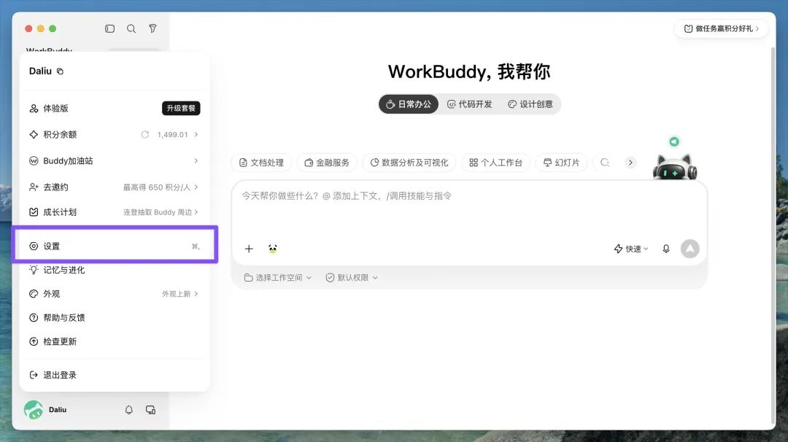
左边一长串分组，看着多，其实就关注两件事，它怎么跟你干活，以及它能把你的电脑动到哪一步。
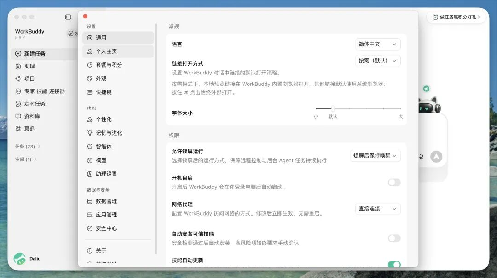
一. 回复风格
第一个这个，老生常谈了。
设置里点个性化，第一项就是回复风格，每一档下面那行小字，就是它适合干嘛。
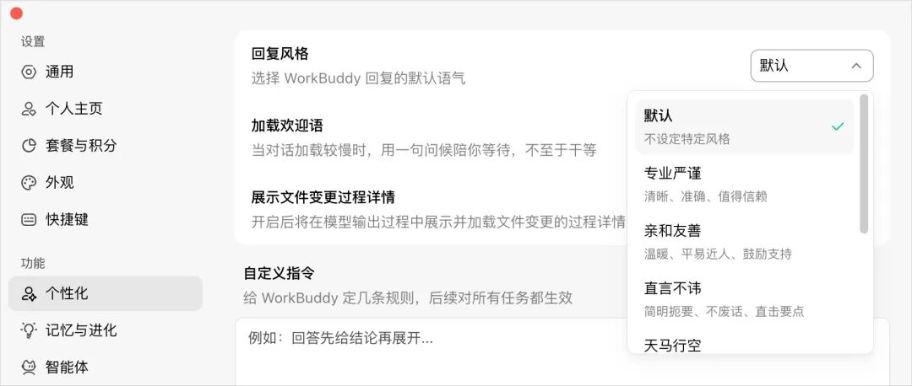
我这里选几个比较重要的。
启发引导，先用提问把你往下带，特别适合需求还模糊的场景。
专业严谨，会认真思考你提出问题的每个方面，做到面面俱到。
高效务实，字最少，信息最多，写文档、做表、只要结论的时候用。
亲和友善，最擅长鼓励，基本上能达到“舔狗”级别，建议不要用。
毒舌吐槽，专门挑刺，方案写完切过去挑一遍毛病。
它是默认语气，每个任务都带着，拿不准就选启发引导，每次用的时候，如果都知道自己要什么结果就换高效务实。
比如说这里我调整一下，同一句「帮我写一份下周的工作计划」在两档下各问一次，差别就出来了。
高效务实：
启发引导：
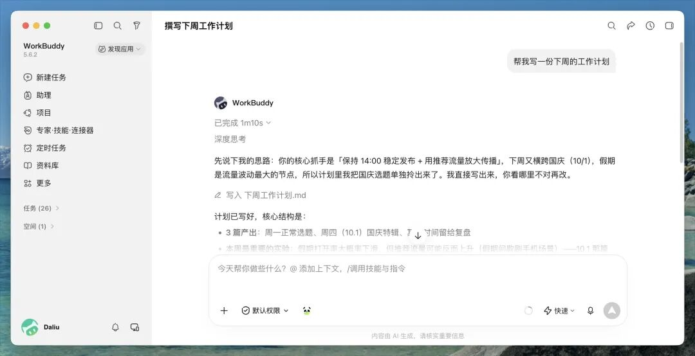
很轻松能看到，一个直接出结果，一个会逐步想很多。
二. 自定义指令
其实 WorkBuddy 的这个自定义指令，就是 Claude、Codex 或者 Openclaw 里面，我们比较熟知的 Claude.md、Agents.md、Soul.md。
本质都一样，就是一份纯文本，Agent 每次干活前先读一遍，照着做。
这个有很多，比较火的版本，我把我的版本直接给你，填进去就好了。
复制进这个位置。
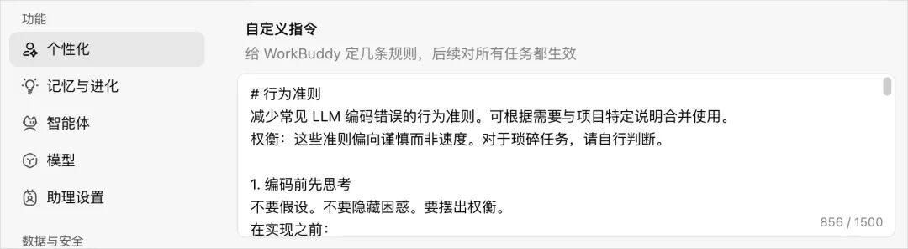
减少常见 LLM 编码错误的行为准则。可根据需要与项目特定说明合并使用。
权衡：这些准则偏向谨慎而非速度。对于琐碎任务，请自行判断。
1. 编码前先思考
不要假设。不要隐藏困惑。要摆出权衡。
在实现之前：
明确陈述你的假设。如果不确定，就提问。
如果存在多种理解方式，把它们都列出来——不要默默选择一种。
如果有更简单的方案，就说出来。该反对时就反对。
如果有不清楚的地方，停下来。指出困惑点。提问。
2. 简单优先
用最少的代码解决问题。不做任何投机性设计。
不添加未被要求的功能。
不为一次性代码做抽象。
不添加未被要求的“灵活性”或“可配置性”。
不为不可能发生的场景写错误处理。
如果你写了 200 行而其实 50 行就够，重写它。
问自己：“资深工程师会觉得这过度复杂吗？”如果会，就简化。
3. 外科手术式修改
只动你必须动的地方。只清理你自己造成的混乱。
编辑现有代码时：
不要“改进”相邻的代码、注释或格式。
不要重构没坏的东西。
匹配现有风格，即使你自己会写得不一样。
如果发现无关的死代码，提一下——不要删除。
当你的改动产生孤儿代码时：
移除因你的改动而变得未使用的导入/变量/函数。
不要移除预先存在的死代码，除非被要求。
检验标准：每一行改动都应能直接追溯到用户的需求。
4. 目标驱动执行
定义成功标准。循环直到验证通过。
把任务转化为可验证的目标：
“添加验证” → “为非法输入写测试，然后让它们通过”
“修复 bug” → “写一个能复现它的测试，然后让它通过”
“重构 X” → “确保重构前后测试都通过”
对于多步骤任务，先说明简要计划：
[步骤] → 验证：[检查项]
[步骤] → 验证：[检查项]
[步骤] → 验证：[检查项]
强的成功标准能让你独立循环推进。弱的标准（“让它能跑”）则需要不断澄清。
如果出现以下情况，说明这些准则正在起作用：diff 中不必要的改动更少、因过度复杂而重写的情况更少、澄清性问题出现在实现之前而不是犯错之后。
你回头看会发现，这里面其实有四条规则。
它们都是在管 Agent 的"手"，不让它乱操作。想清楚再写、简单优先、只动该动的、把目标始终记住，核心就一个意思：让 Agent 少自作主张，多照你的真实需求来。
三. 模型档位和上下文
这个就是经验之谈了。
越聊越慢，积分越掉越快，很多时候不是模型不行，是设置没改。
对话框右下角的模型选择里，现在能选档位。
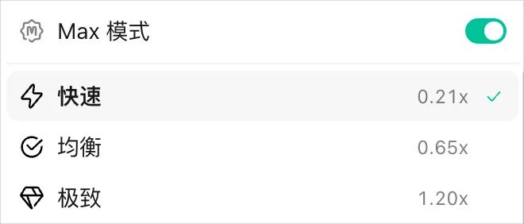
快速管小修小改，均衡管日常的文档和数据，极致留给步骤多、要反复核对的复杂任务，拿不准就停在均衡。
思考强度一般我都用高，真正要注意的是下面两点。
一个是上下文长度，默认 300K。
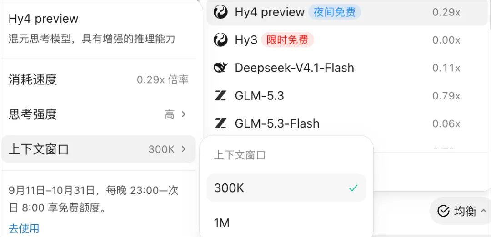
这里说一个对上下文理解和使用的经验。
高的上下文窗口会在每一轮都把整段上下文发给模型一遍，窗口越大，每轮越贵。
绝大多数场景下开到 1M 也不会变聪明。
所以，绝大多数情况 300K 完全够了。
但是，如果你的场景是大量的文档输入（就是输入都已经超过 300k 了），这时候才调大到 1M。
另一个是 Max 模式，这里的经验也分享给大家。
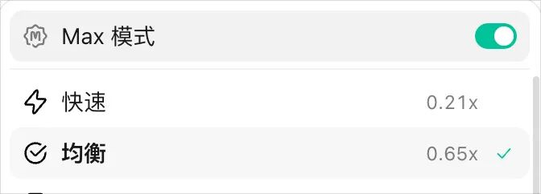
实际上，关着时，系统会自己压缩上下文，打开就全程不压缩，细节不会丢掉，但积分掉得明显更快。
完全根据自己的任务的类型划分。
如果想要准确且是一个长程任务，请确保 Max 是开着的。
我在这里想到一个贼贴切的比喻帮大家理解。
就像车一直挂在运动模式，开长途确实跟脚，但是更费油。
四. 记忆
记忆有两层。
第一层是记忆与进化里的「生成对话记忆」，默认是开着的。
它发挥效果的时候，是每次在用 WorkBuddy 的时候，如果有涉及到你的背景和偏好的时候，他就会记录下来。
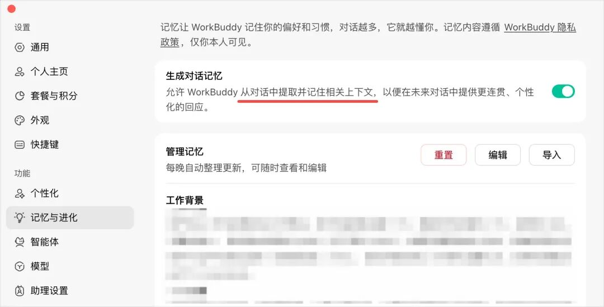
问题是，一次性的调试过程、过期的待办这些也有可能会混进去。
所以隔一两天翻一眼记忆摘要，不对的点右上角编辑，直接说哪条忘掉、哪条改成什么。
但是，如果大家觉得要管理记忆这个事情很麻烦，直接关掉也是可以的。
我就默认关着。。。。
第二层是个性化页最底下的「长期记忆记录」，你能直接写。
这个其实也是和上面一样自动记录，但是它更加长期。
我建议最前面放一段规则。
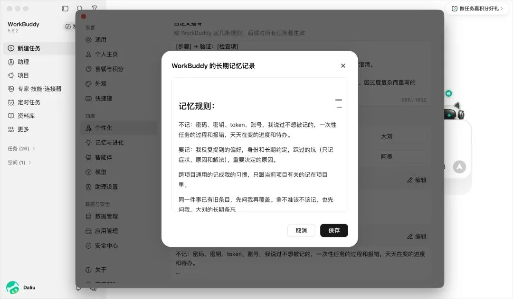
不记：密码、密钥、token、账号，我说过不想被记的，一次性任务的过程和报错，天天在变的进度和待办。
要记：我反复提到的偏好，身份和长期约定，踩过的坑（只记症状、原因和解法），重要决定的原因。
跨项目通用的记成我的习惯，只跟当前项目有关的记在项目里。
同一件事已有旧条目，先问我再覆盖。拿不准该不该记，也先问我。
这个的意义就在于，让 AI 知道，记忆该怎么记。
五. 权限、删除保护和备份
这三个我放在一起，是因为我的方案是三者互相配合的。
首先是权限。
主要是解决它容易干什么都问你的问题。
对于 Skills，在设置里打开「非高风险自动安装」，它照样先做安全检测，非高风险的自动装完，高风险的还是停下来等你。
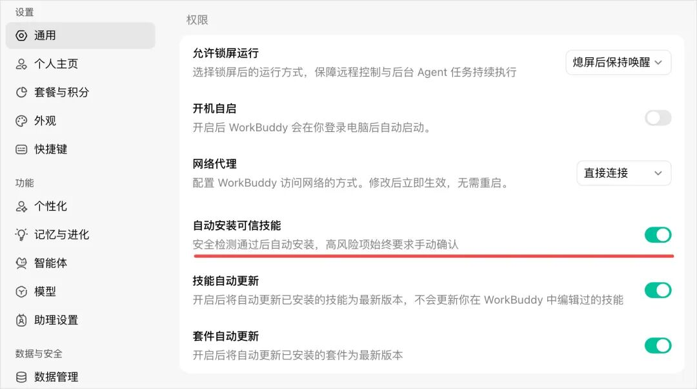
还有个涉及权限的地方是输入框的地方。
是否允许完全访问，我的建议是。
如果说，你是在公司电脑上用，有一些你自己都不能触碰的权限，那就不要开。
其他情况，为了让使用更流畅，我一般都开着。
那么，开着倒是方便了，但是经常 AI 可能把我们的本来比较好的版本，不经过我们的同意，就改了。
针对这个问题，所以就需要删除保护和备份来配合兜底。
这个在安全中心。
1.自动备份打开。
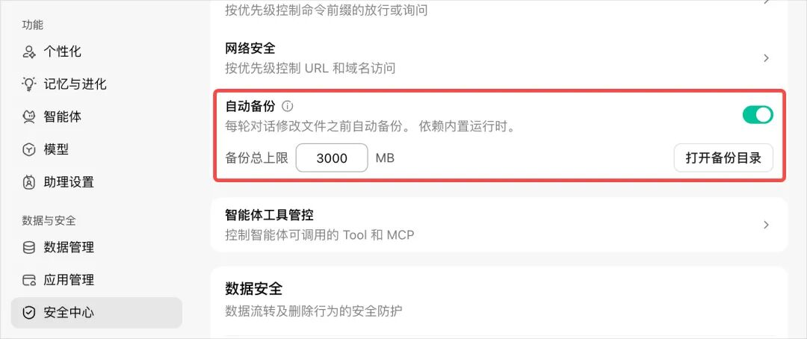
2.删除保护打开。
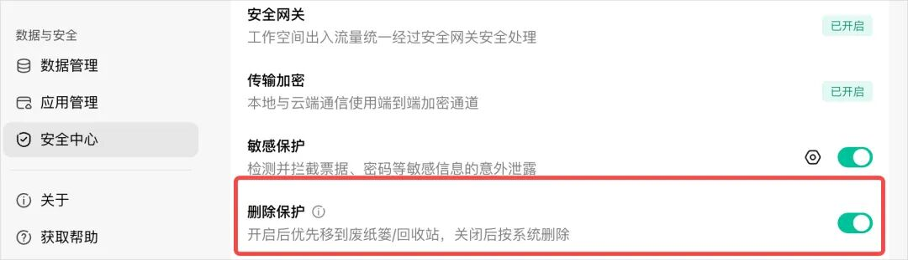
删除保护开着，删的文件优先进回收站，一次要删的数量到了设定值，默认 50 个，还会单独找你审批。
自动备份开着，它第一次改某个已有文件前，会先留一份快照。
这样配合起来，我觉得应该是用 WorkBuddy 兼具效率和安全的搭配。
写在最后
设置确实是很重要的部分。
其实我觉得更重要的事情不知道大家有没有想过。
为什么不管是 WorkBuddy、Codex，还是其他的 Agent，都有这么多设置项。
很多朋友问我，我要学会 AI，到底怎么才算学会。
实际上，就是这些配置项，他们代表什么，有什么用，在真实使用中有什么体现。
这就是 Agent 那些细枝末节的地方。
而恰恰是这些地方，对把一件事情从做完到做好的影响，最大。
以上，是我的一些经验和方法。
希望对你有所帮助。
以上，既然看到这里了，
如果觉得不错，随手点个赞、在看、转发三连吧，
如果想第一时间收到推送，也可以给我个星标⭐～
谢谢你看我的文章
你的关注是我持续更新的动力～
我是谁
我是 AI大刘，北大毕业，大模型研究方向，腾讯犀牛鸟，先后在腾讯、百度的大模型研发部门。现在斜杠青年：给多家国企做AI顾问 \ OPC \ 研究员 \ 产品独立开发者 \ Vibe Coder